The Perfect Crime
Motion Graphic
What happens when a line worker at a packaging factory plans the perfect crime down to the smallest detail?
An audio-driven animation based on a soundbite from the sitcom The Office
Created as part of a motion design studio course led by Maayan Tzuriel and Adi Baron
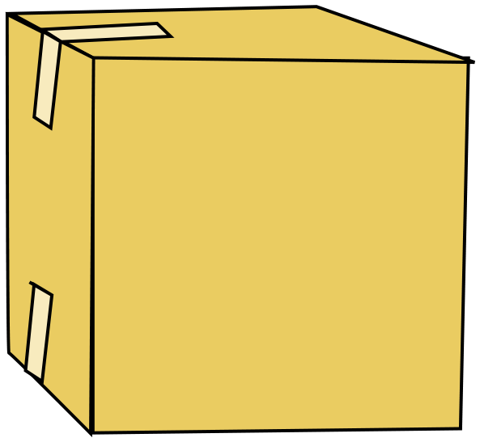
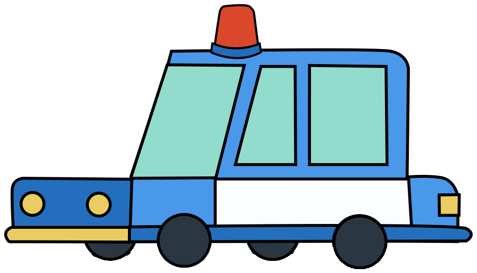
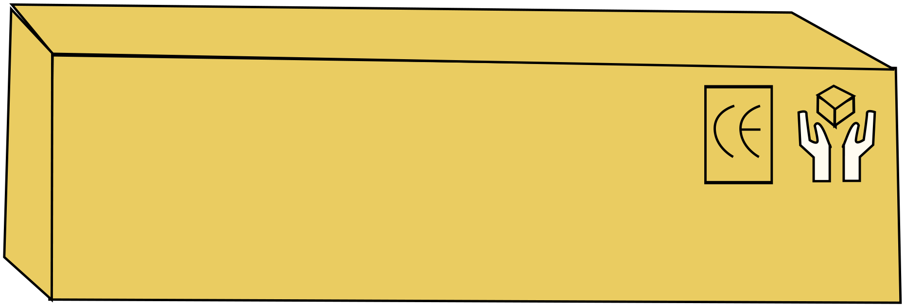
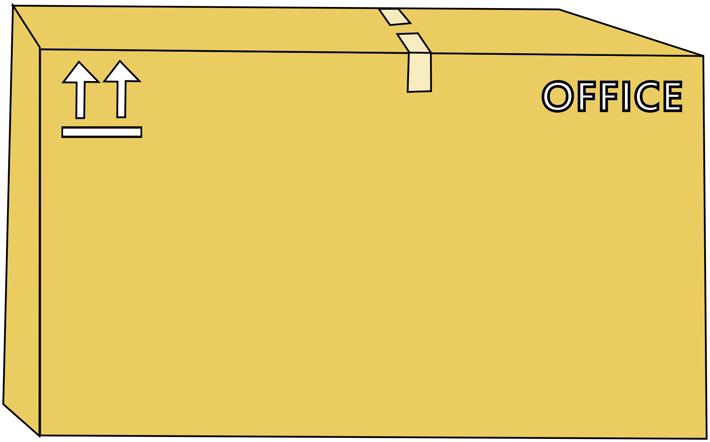
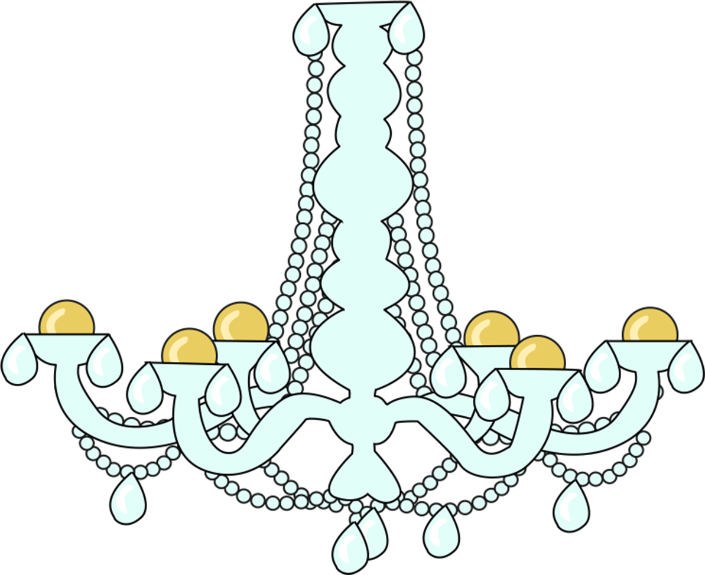
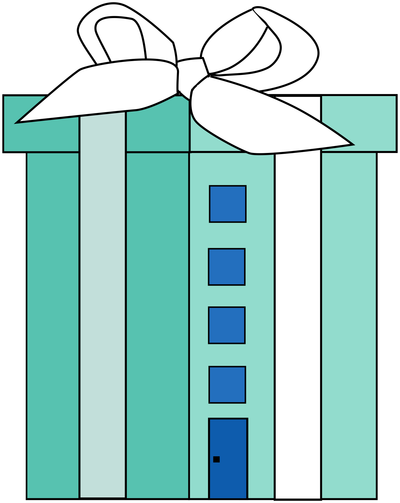
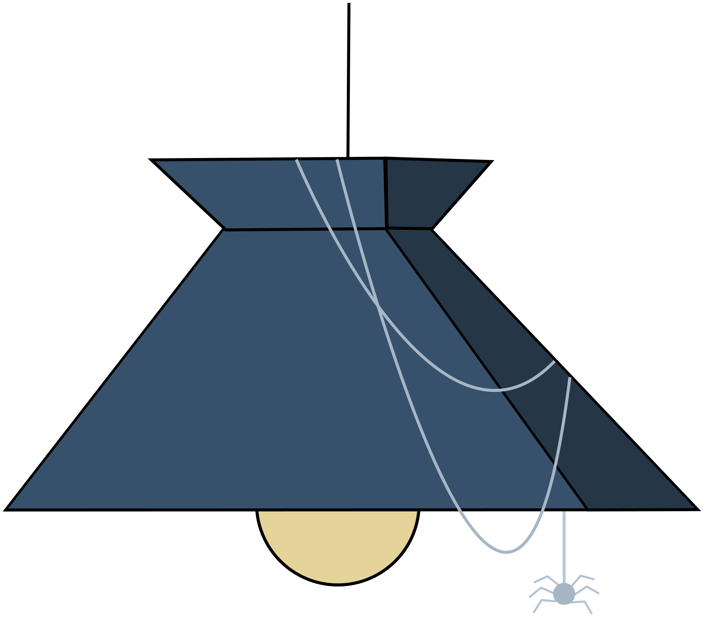
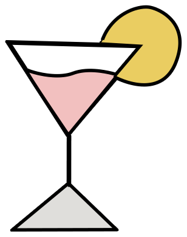
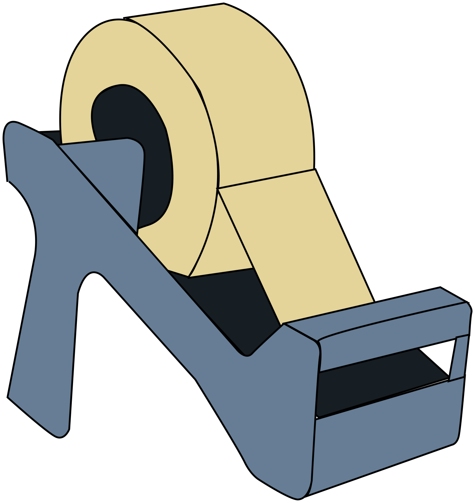
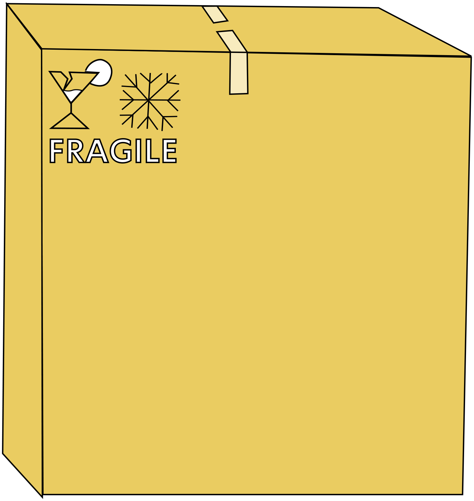
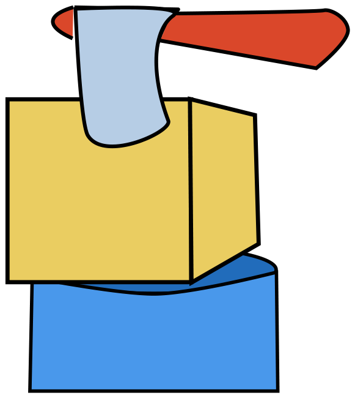
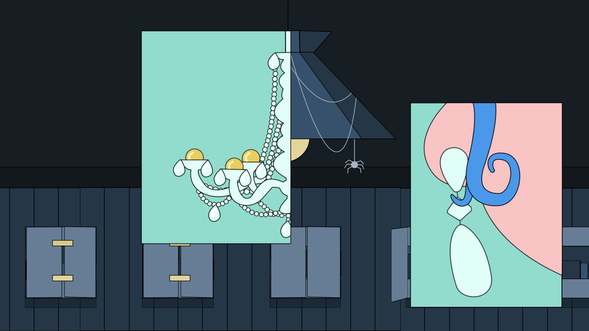
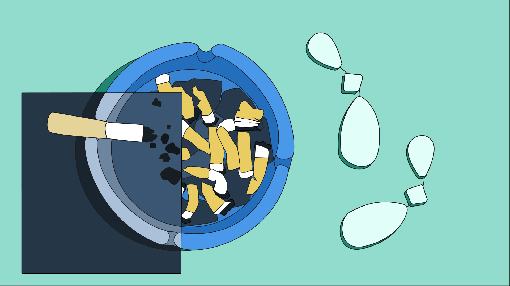
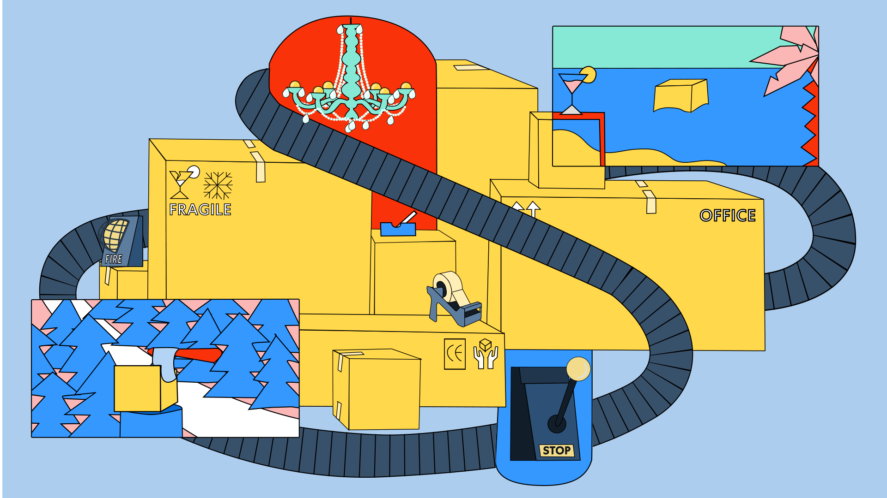
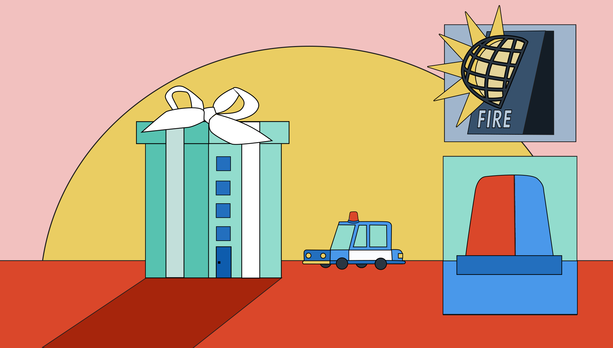
Color
pallet